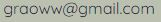
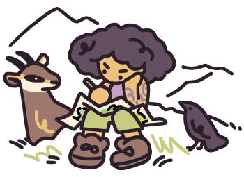

Je suis Annelou Graoww,
J'anime et réalise des courts métrage d'animation 2D depuis les montagnes d'Auvergne.
J'ai obtienu mon diplome d'assitante réalisatrice de film d'animation à l'EMCA en 2013 et ai travaillé depuis avec de nombreux studios pour des clients tels que Spotify, Google, Apple, Disney etc...
Je peux travailler sous TVPaint, clip studio, photoshop, flash et after.
Je parle aussi anglais et un peu 한국어.
n'hésitez pas à me contacter si vous avez un projet !
 